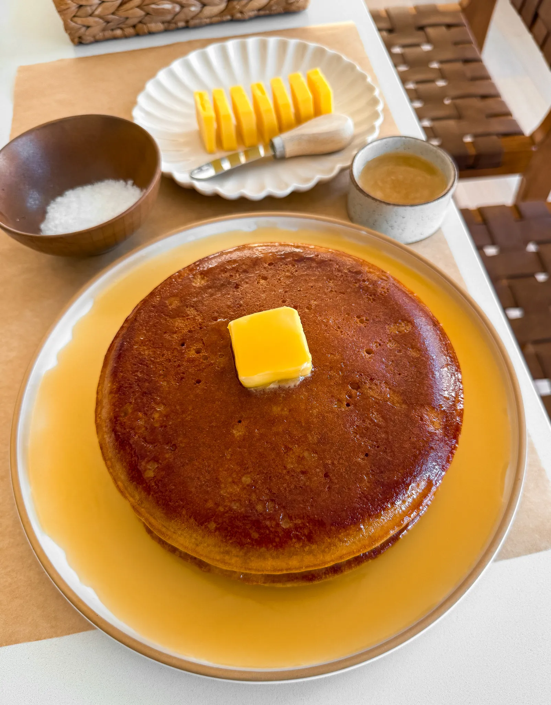
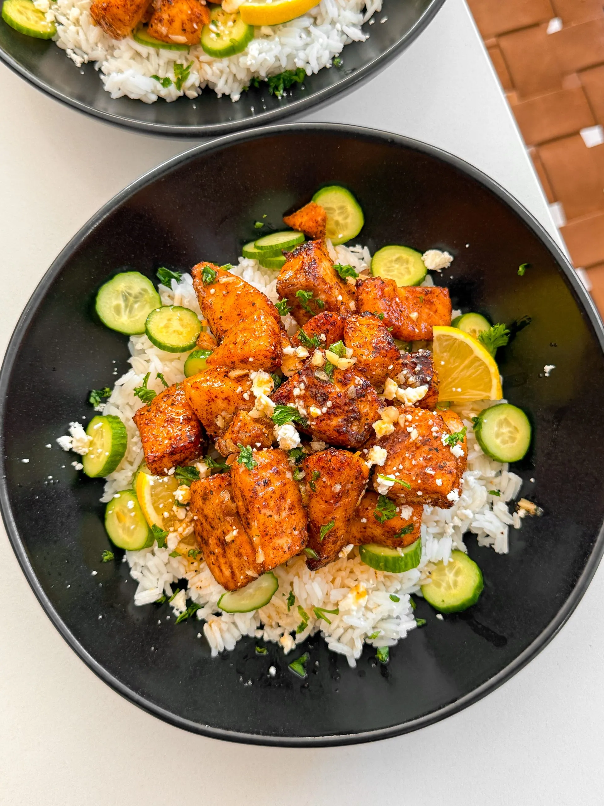
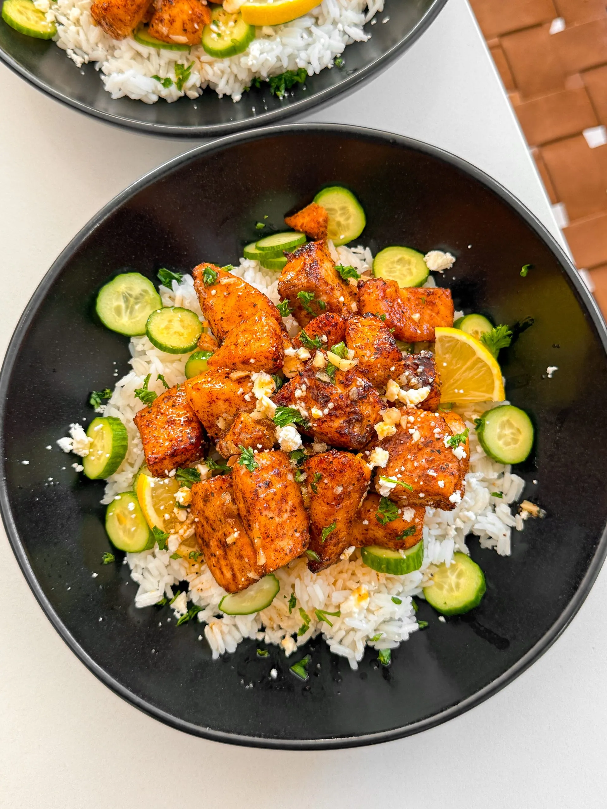

HTML Potluck Project

 

FLUFFY DINER PANCAKES
- PREP TIME:1 HOUR & 30 MINUTES
- COOK TIME: 30 MINUTES
- TOTAL TIME: 2 HOURS
- YIELDS: 3 LARGE PANCAKES
These pancakes are a copycat of the viral ones from Middle Child in
Philly, where the secret is yeast, giving them that perfectly airy,
fluffy texture you can’t get from regular pancakes. They’re blowing
up on TikTok, but if you’ve ever tried to get them at either Middle
Child or Golden Diner in NYC, you know the lines are insane. Forget
the wait and the travel—these golden, melt-in-your-mouth pancakes
can be made right at home, anytime!
Jump to Recipe: Fluffy Diner Pancakes
PHILLY CHEESESTEAK SLIDERS
- PREP TIME:15 MINUTES
- COOK TIME: 25 MINUTES
- TOTAL TIME: 40 MINUTES
- YIELDS: 12 SLIDERS
If you’re looking for a game-day treat that’ll leave everyone
talking, these cheesesteak sliders are the way to go. Packed with
tender steak, caramelized onions, melty cheese, and all the right
seasonings, they’re perfect for your Super Bowl spread. Let me walk
you through every step so you can serve up sliders that will steal
the show and leave none to go!
Jump to Recipe: Philly Cheesesteak Sliders
HONEY GARLIC LEMON SALMON BITES
- PREP TIME:10 MINUTES
- COOK TIME: 15 MINUTES
- TOTAL TIME: 30 MINUTES
- YIELDS: 2-3 PEOPLE
This honey lemon garlic salmon hits all the right notes—crispy,
tender, and bursting with sweet, savory goodness. The air fryer does
its magic, giving the salmon a perfect crunch, while the honey-lemon
sauce adds that irresistible buttery zing. It’s a flavor-packed dish
that’s easy to whip up and will have you craving more with every
bite!
Jump to Recipe: Honey Garlic Lemon Salmon Bites
FLUFFY DINER PANCAKES
INGREDIENTS
BATTER - PROOF:
- 3/4 cup whole milk
- 1 ¼ cup buttermilk
- 1 cup all-purpose flour
- 2 teaspoons instant yeast
- 3 tablespoons granulated sugar
BATTER - DRY:
- 1 cup all-purpose flour
- 1 teaspoon baking soda
- 1/2 teaspoon salt
BATTER - WET:
- 2 large eggs
- 1/4 cup vegetable oil
- 2 teaspoons vanilla extract
HONEY MAPLE BUTTER SAUCE
- 1/2 cup (1 stick) unsalted butter
- 1/4 cup honey
- 1/4 cup maple syrup
- pinch of salt
OTHER
- Cubes of butter, to add on top
INSTRUCTIONS
- In a large bowl, whisk together the whole milk, buttermilk,
flour, instant yeast, and sugar. Let it bloom in a warm place
for 1 hour until bubbly and airy.
- While the yeast is blooming, make the honey butter maple sauce:
over medium-low heat, melt the butter in a small saucepan. Then
stir in the honey, maple syrup, and a pinch of salt until smooth
and glossy. Set aside.
- In a separate bowl, whisk the eggs, vegetable oil, and vanilla
extract until smooth and well combined.
- Once the batter has bloomed, add the whisked wet ingredients to
it and mix until combined.
- In another bowl, whisk together the dry ingredients: flour,
baking soda, and salt.
- Add the dry mix to the batter and whisk gently just until no
more dry bits remain. Do not overmix—the batter should be thick
and a little lumpy.
- Preheat the oven to 400°F. Onee preheated, add your skillet
inside and let it preheat for 5 minutes.
- Carefully remove the hot skillet, grease it with a bit of oil,
then pour in about 1¼ to 1½ cups of batter.
- Bake for 10 to 12 minutes, until the pancake is puffed up and
golden on top.
- Flip over on a plate, add a slice of butter, and drizzle with
the warm honey butter maple sauce to cover the entire surface.
Enjoy warm.
TIPS & TRICKS
- For even more a cake texture/crumb, add an extra 1/4 cup of
whole milk to the proof mixture.
PHILLY CHEESESTEAK SLIDERS
INGREDIENTS
STEAK:
- 1 pound thinly shaved steak
- 1 tablespoon unsalted butter
- 1 tablespoon neutral oil
- 1/2 to 3/4 teaspoon salt
- 1 teaspoon paprika
- 1/2 teaspoon mustard powder
- 1/4 teaspoon black pepper
- 1 tablespoon Worcestershire sauce
- 1/4 cup beef broth
VEGGIES:
- 1/2 large yellow onion, diced
- 1 green bell pepper, thinly sliced
- 1 tablespoon neutral oil
- salt, to taste
- black pepper, to taste
- 1/2 tablespoon minced garlic
FOR ASSEMBLY
- 12-pack Hawaiian rolls
- mayonnaise, for toasting bread (optional)
- 4 to 6 slices cheese (Cooper Sharp, provolone, or cheese wiz)
- melted unsalted butter, for brushing tops
- toasted sesame seeds
INSTRUCTIONS
- Cook the Veggies: In a pan over medium heat, add neutral oil.
Once hot, toss in the diced onion and sliced bell pepper. Season
with a pinch of salt and black pepper. Sauté until softened and
slightly caramelized, about 5 to 7 minutes. Stir in the minced
garlic and cook for 1 to 2 minutes until fragrant. Remove from
the pan and set aside.
- Cook the Steak: In the same pan, melt butter with neutral oil
over medium-high heat. Add the shaved steak, breaking it apart
as it cooks.Season with salt, paprika, mustard powder, and black
pepper. Once the steak is browned, pour in Worcestershire sauce
and cook for another minute. Then, pour in the beef broth to
deglaze the pan, scraping up any browned bits for extra flavor.
Let it simmer for 2 minutes until slightly reduced. Remove from
heat.
- Prepare the Rolls: Preheat the oven to 350°F (175°C). Keeping
the Hawaiian rolls connected, slice them in half horizontally.
Spread a thin layer of mayonnaise on the cut sides. Place them
mayo-side up on a baking sheet and toast in the oven for a few
minutes until lightly golden.
- Assemble the Sliders: Place the bottom half of the toasted rolls
in a baking dish or tray. Evenly spread the cooked steak over
the bread, then layer the sautéed veggies on top. Add your
choice of Cooper Sharp, provolone, or Cheese Whiz over the
veggies. Place the top half of the rolls on.
- Finish and Bake: Brush the tops with melted butter and sprinkle
with toasted sesame seeds. Cover loosely with foil and bake for
10 to 15 minutes until the cheese is melted. Then, remove the
foil and bake for another 5 minutes until the tops are golden
brown.
- Serve: Let the sliders cool slightly before pulling them apart.
Enjoy warm!
TIPS & TRICKS
- Freeze the Steak: Place your steak in the freezer for about
30-45 minutes. This firms it up, making it much easier to slice
thinly.
- Slice Against the Grain: After the steak firms up, remove it
from the freezer. Using a sharp knife, slice the steak thinly
against the grain (those lines running through the meat). Aim f
or slices about 1/8 inch thick. If you have a mandoline slicer,
you can use that for even thinner slices!
HONEY GARLIC LEMON SALMON BITES
INGREDIENTS
SALMON:
- 1 pound salmon, cubed
- 1 tablespoon avocado oil
- 1 teaspoon chili powder
- 3/4 teaspoon salt
- 1/2 teaspoon garlic powder
- 1/4 teaspoon black pepper
HONEY GARLIC LEMON SAUCE
- 1/4 cup unsalted butter
- 1 tablespoon finely minced garlic
- 2 to 3 tablespoons honey
- 1 to 2 tablespoons lemon juice
INSTRUCTIONS
- Cook the Veggies: In a pan over medium heat, add neutral oil.
Once hot, toss in the diced onion and sliced bell pepper. Season
with a pinch of salt and black pepper. Sauté until softened and
slightly caramelized, about 5 to 7 minutes. Stir in the minced
garlic and cook for 1 to 2 minutes until fragrant. Remove from
the pan and set aside.
- Cook the Steak: In the same pan, melt butter with neutral oil
over medium-high heat. Add the shaved steak, breaking it apart
as it cooks.Season with salt, paprika, mustard powder, and black
pepper. Once the steak is browned, pour in Worcestershire sauce
and cook for another minute. Then, pour in the beef broth to
deglaze the pan, scraping up any browned bits for extra flavor.
Let it simmer for 2 minutes until slightly reduced. Remove from
heat.
- Prepare the Rolls: Preheat the oven to 350°F (175°C). Keeping
the Hawaiian rolls connected, slice them in half horizontally.
Spread a thin layer of mayonnaise on the cut sides. Place them
mayo-side up on a baking sheet and toast in the oven for a few
minutes until lightly golden.
- Assemble the Sliders: Place the bottom half of the toasted rolls
in a baking dish or tray. Evenly spread the cooked steak over
the bread, then layer the sautéed veggies on top. Add your
choice of Cooper Sharp, provolone, or Cheese Whiz over the
veggies. Place the top half of the rolls on.
- Finish and Bake: Brush the tops with melted butter and sprinkle
with toasted sesame seeds. Cover loosely with foil and bake for
10 to 15 minutes until the cheese is melted. Then, remove the
foil and bake for another 5 minutes until the tops are golden
brown.
- Serve: Let the sliders cool slightly before pulling them apart.
Enjoy warm!
TIPS & TRICKS
- Freeze the Steak: Place your steak in the freezer for about
30-45 minutes. This firms it up, making it much easier to slice
thinly.
- Slice Against the Grain: After the steak firms up, remove it
from the freezer. Using a sharp knife, slice the steak thinly
against the grain (those lines running through the meat). Aim f
or slices about 1/8 inch thick. If you have a mandoline slicer,
you can use that for even thinner slices!